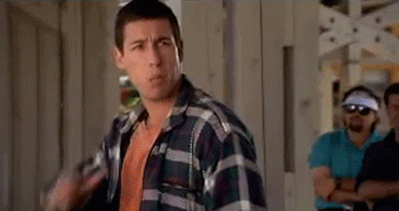

<mat-toolbar color="primary" class="toolbar-container">
  <button mat-icon-button (click)="goBack()" class="back-button">
    <mat-icon matSuffix>arrow_back</mat-icon>
  </button>
  Score
</mat-toolbar>
  <h2 style="text-align: center; padding-top: 50px;">Your Score is: </h2>
  <br><br><br><br><br>
<div *ngIf="(score/totalQuestions) * 100 > 40">
  <h2 style="text-align: center;">
    <mat-icon color="primary">thumb_up</mat-icon> <br>
    {{username}} : {{score}} out of {{totalQuestions}} correct! <br>
    Congratulations You Passed! <br>
    
  </h2>
</div>
<div *ngIf="(score/totalQuestions) * 100 < 40">
  <h2 style="text-align: center;">
    <mat-icon color="primary">thumb_down</mat-icon> <br>
    {{username}}  :  {{score}} out of {{totalQuestions}} correct! <br>
    Sorry! You couldn't clear the exam! <br>
    
  </h2>
</div>
